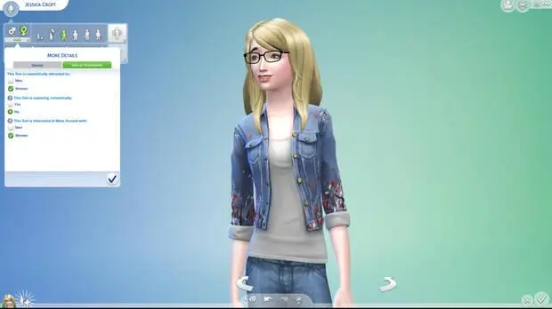
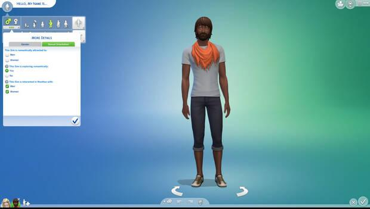

Los Sims 4 permitirá elegir la orientación sexual de tus Sims
A finales de mes se podrá personalizar al Sim con nuevas opciones que buscan dar una mejor representación de la comunidad LGTBQIA+.

EA y Maxis han anunciado la disponibilidad a finales de mes de una nueva actualización gratuita para Los Sims 4 que permitirá dar más libertad a la hora de personalizar al Sim. "Los jugadores podrán encontrar las opciones dónde elegir la orientación sexual en el modo Crear un Sim y permitirá a los Sims experimentar atracción por otros Sims de formas diferentes", dice Electronic Arts.
Estas opciones permitirán que el Sim sienta atracción por el mismo o diferente sexo, experimentar atracción naturalmente a través de interacciones con otros Sims con el paso del tiempo, sentir atracción física pero no romántica y viceversa, o no sentir ninguna atracción. "La inclusión ha sido uno de los pilares de Los Sims desde el lanzamiento de la saga hace 22 años, y el equipo de desarrollo introduce con orgullo esta característica nueva como una forma de reflejar el mundo en el que vivimos, las formas en las que interactuamos entre nosotros y representar experiencias reales".
Electronic Arts dice que todavía queda "mucho trayecto por recorrer" y, aunque no pueden entrar en detalles sobre qué es exactamente lo que viene a continuación, muestran su "firme compromiso de seguir mejorando nuestra representación de la comunidad LGTBQIA+".
La desarrolladora por ejemplo reconoce que en origen no se diseñó para definir Sims de género no binario, una limitación técnica que por el momento solo permite elegir entre dos géneros. "Al crear un personaje se sigue teniendo que hacer una selección de género binaria independientemente de los pronombres que se le asignen. Esperamos haber demostrado nuestro compromiso de mejorar la representación de las identidades de género con características como la personalización de sexos, que permite modificar el físico, las preferencias de ropa, y las opciones de embarazo y uso del retrete. Vemos la actualización de los pronombres como otro paso importante hacia una mejor representación de los géneros no binarios, pero también somos conscientes de que los pronombres no son lo mismo que las identidades de género".
"Los Sims 4 tiene ya en este momento 8 años de vida y depende de sistemas cuya arquitectura original se diseñó con un género binario en mente. En el transcurso de esos años, hemos dado pasos importantes como la personalización de sexos, la inclusión de los pronombres y, ahora, la adición de la orientación sexual. El camino aún no ha acabado, quedan muchos más pasos por delante. Uno de ellos es conseguir sistemas mecánicos adecuados totalmente compatibles con Sims de género no binario".